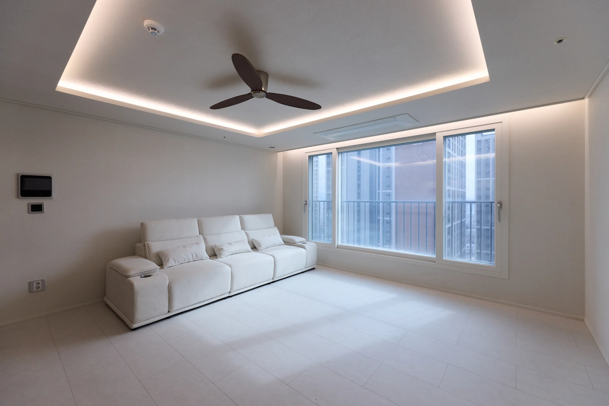

APARTMENT · GUMI SAGOK
구미 사곡 이편한세상 33평
화이트와 우드로 정리한 집
밝은 벽과 바닥에 짙은 우드를 더했습니다. 색을 많이 쓰기보다, 거실과 주방이 자연스럽게 이어지도록 정리한 집입니다.
- 위치
- 구미 사곡동
- 면적
- 33평
- 기간
- 공사 기간 3주
- 시공 사진
- 30장

현관｜들어오는 순간부터 차분하게
우드 프레임 중문과 거울 수납장이 먼저 맞이합니다.
밝은 복도에 짙은 우드가 들어가니 집의 첫인상도 또렷해집니다.
복도는 장식을 더하기보다 벽과 문이 이어지는 모습을 단정하게 정리했습니다.
거실｜넓어 보이게, 편하게
화이트 소파와 밝은 바닥 위로 우드 실링팬이 중심을 잡습니다.
천장을 따라 이어지는 간접조명은 공간에 부드러운 빛을 더합니다.
집은 넓어 보이게 정리했습니다.
청소할 면적이 줄어든 건 아닙니다.
그 부분은 저희도 아쉽습니다.
주방｜화이트 위에 우드 한 겹
상부장은 화이트, 하부장은 짙은 우드로 구성했습니다.
거실을 향해 이어지는 조리대와 냉장고 수납장이 주방의 큰 틀을 잡아줍니다.
안쪽 조리 공간과 싱크대, 가전이 들어가는 자리도 함께 담았습니다.
주방은 새로 만들었습니다.
배달 앱은 철거 대상이 아니라 그대로 두었습니다.
창가 싱크대와 수전, 수납장 안쪽까지 가까이 살펴보세요.
큰 장면에서는 잘 안 보이는 부분도 매일 사용하는 자리니까요.
침실·화장대｜쉬는 공간도 같은 흐름으로
침실은 밝은 벽과 우드 가구가 어우러지는 모습입니다.
화장대는 안쪽에 자리 잡아 방에서 이어지는 동선을 단정하게 정리했습니다.
거울과 조명을 갖춘 화장대, 비워둔 방까지.
각 공간은 다르게 쓰더라도 집 전체의 색은 차분하게 이어집니다.
마무리
33평, 3주. 밝은 바탕에 우드를 더해 정리한 사곡 이편한세상 현장입니다.
우리 집도 바꾸고 싶다면 현장명과 평형, 원하는 공사 범위를 남겨주세요. 어디부터 손보면 좋을지 함께 살펴보겠습니다.
우리 집도 어디부터 바꾸면 좋을까요?
현장명과 평형, 원하시는 공사 범위를 남겨주세요. 다함 인테리어가 함께 살펴보겠습니다.